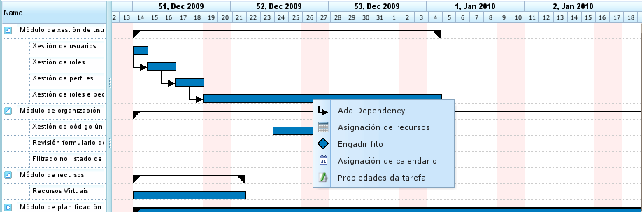
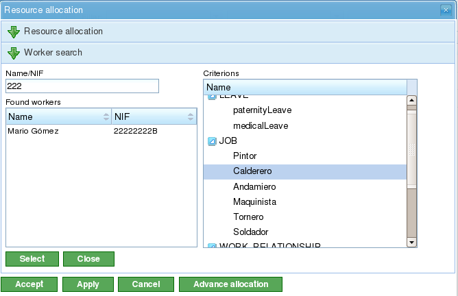

Назначение ресурсов
Contents
Назначение ресурсов — одна из наиболее важных функций программы, которая может выполняться двумя различными способами:
- Конкретное назначение
- Обобщённое назначение
Оба типа назначений описаны в следующих разделах.
Для выполнения любого из типов назначения ресурсов необходимо выполнить следующие шаги:
- Перейти к представлению планирования проекта.
- Щёлкнуть правой кнопкой мыши по задаче, которую необходимо запланировать.

Меню назначения ресурсов
- Программа отображает экран со следующей информацией:
- Список критериев для выполнения: Для каждой группы часов отображается список необходимых критериев.
- Информация о задаче: Дата начала и окончания задачи.
- Тип расчёта: Система позволяет пользователям выбрать стратегию расчёта назначений:
- Рассчитать количество часов: Рассчитывается количество часов, необходимых от назначенных ресурсов, при заданной дате окончания и количестве ресурсов в день.
- Рассчитать дату окончания: Рассчитывается дата окончания задачи на основе количества назначенных ресурсов и общего числа часов, необходимых для её выполнения.
- Рассчитать количество ресурсов: Рассчитывается количество ресурсов, необходимых для завершения задачи к определённой дате, при известном количестве часов на ресурс.
- Рекомендованное назначение: Этот параметр позволяет программе собрать критерии и общее количество часов из всех групп часов, а затем предложить обобщённое назначение. Если предыдущее назначение существует, система удаляет его и заменяет новым.
- Назначения: Список выполненных назначений. В этом списке отображаются обобщённые назначения (число будет списком выполненных критериев, а также количество часов и ресурсов в день). Каждое назначение можно явно удалить, нажав кнопку удаления.

Назначение ресурсов
- Пользователи выбирают «Поиск ресурсов».
- Программа отображает новый экран, состоящий из дерева критериев и списка работников, которые соответствуют выбранным критериям, справа:

Поиск при назначении ресурсов
- Пользователи могут выбрать:
- Конкретное назначение: Подробности об этом параметре см. в разделе «Конкретное назначение».
- Обобщённое назначение: Подробности об этом параметре см. в разделе «Обобщённое назначение».
- Пользователи выбирают список критериев (обобщённое) или список работников (конкретное). Можно выполнить несколько выборов, удерживая клавишу «Ctrl» при нажатии на каждого работника/критерий.
- Затем пользователи нажимают кнопку «Выбрать». Важно помнить, что если обобщённое назначение не выбрано, пользователи должны выбрать работника или машину для выполнения назначения. Если выбрано обобщённое назначение, пользователям достаточно выбрать один или несколько критериев.
- Затем программа отображает выбранные критерии или список ресурсов в списке назначений на исходном экране назначения ресурсов.
- Пользователи должны выбрать количество часов или ресурсов в день в зависимости от метода назначения, используемого в программе.
Конкретное назначение
Это конкретное назначение ресурса задаче проекта. Другими словами, пользователь решает, какой конкретный работник (по имени и фамилии) или машина должен быть назначен задаче.
Конкретное назначение может быть выполнено на экране, показанном на этом изображении:

Конкретное назначение ресурса
При конкретном назначении ресурса программа создаёт ежедневные назначения на основе выбранного процента ежедневно назначаемых ресурсов, сравнивая его с доступным календарём ресурса. Например, назначение 0,5 ресурса для задачи на 32 часа означает, что конкретному ресурсу назначается 4 часа в день для выполнения задачи (при условии рабочего календаря 8 часов в день).
Конкретное назначение машины
Конкретное назначение машины работает так же, как и назначение работника. Когда машина назначается задаче, система сохраняет конкретное назначение часов для выбранной машины. Основное отличие состоит в том, что система выполняет поиск в списке назначенных работников или критериев в момент назначения машины:
- Если у машины есть список назначенных работников, программа выбирает из тех, которые необходимы машине, исходя из назначенного календаря. Например, если календарь машины рассчитан на 16 часов в день, а календарь ресурса — на 8 часов, из списка доступных ресурсов назначаются два ресурса.
- Если у машины есть один или несколько назначенных критериев, из числа ресурсов, соответствующих критериям, назначенным машине, выполняются обобщённые назначения.
Обобщённое назначение
Обобщённое назначение происходит, когда пользователи не выбирают ресурсы конкретно, а предоставляют решение программе, которая распределяет нагрузку между доступными ресурсами компании.

Обобщённое назначение ресурса
Система назначений основывается на следующих допущениях:
- Задачи имеют критерии, которые требуются от ресурсов.
- Ресурсы настроены на выполнение критериев.
Однако система не выдаёт ошибок, когда критерии не были назначены, но когда все ресурсы удовлетворяют отсутствию критериев.
Алгоритм обобщённого назначения работает следующим образом:
- Все ресурсы и дни рассматриваются как контейнеры, в которые помещаются ежедневные назначения часов, исходя из максимальной ёмкости назначения в календаре задачи.
- Система ищет ресурсы, соответствующие критерию.
- Система анализирует, какие назначения в настоящее время содержат различные ресурсы, удовлетворяющие критериям.
- Ресурсы, соответствующие критериям, выбираются из тех, у которых достаточно доступности.
- Если более свободные ресурсы недоступны, назначения выполняются для ресурсов с меньшей доступностью.
- Перегрузка ресурсов начинается только тогда, когда все ресурсы, удовлетворяющие соответствующим критериям, назначены на 100%, до достижения общего количества, необходимого для выполнения задачи.
Обобщённое назначение машины
Обобщённое назначение машины работает так же, как и назначение работника. Например, когда машина назначается задаче, система сохраняет обобщённое назначение часов для всех машин, удовлетворяющих критериям, как описано для ресурсов в целом. Однако помимо этого система выполняет для машин следующую процедуру:
- Для всех машин, выбранных для обобщённого назначения:
- Собирается конфигурационная информация машины: значение alpha, назначенные работники и критерии.
- Если у машины есть назначенный список работников, программа выбирает количество, необходимое машине, в зависимости от назначенного календаря. Например, если календарь машины рассчитан на 16 часов в день, а календарь ресурса — на 8 часов, программа назначает два ресурса из списка доступных ресурсов.
- Если у машины есть один или несколько назначенных критериев, программа выполняет обобщённые назначения из числа ресурсов, соответствующих критериям, назначенным машине.
Расширенное назначение
Расширенные назначения позволяют пользователям изменять назначения, автоматически выполняемые приложением. Эта процедура позволяет пользователям вручную выбирать ежедневные часы, выделяемые ресурсами на назначенные задачи, или определять функцию, применяемую к назначению.
Шаги для управления расширенными назначениями:
- Перейдите в окно расширенного назначения. Существует два способа доступа к расширенным назначениям:
- Перейдите к конкретному проекту и смените представление на расширенное назначение. В этом случае будут показаны все задачи проекта и назначенные ресурсы (конкретные и обобщённые).
- Перейдите в окно назначения ресурсов, нажав кнопку «Расширенное назначение». В этом случае будут показаны назначения, отображающие ресурсы (обобщённые и конкретные), назначенные задаче.

Расширенное назначение ресурса
- Пользователи могут выбрать желаемый уровень масштаба:
- Уровни масштаба больше одного дня: Если пользователи изменяют значение назначенных часов на неделю, месяц, четыре месяца или полгода, система линейно распределяет часы по всем дням выбранного периода.
- Ежедневный масштаб: Если пользователи изменяют значение назначенных часов на день, эти часы применяются только к этому дню. Следовательно, пользователи могут решить, сколько часов они хотят назначить в день ресурсам задачи.
- Пользователи могут выбрать функцию расширенного назначения. Для этого пользователи должны:
- Выбрать функцию из списка выбора, который появляется рядом с каждым ресурсом, и нажать «Настроить».
- Система отображает новое окно, если выбранная функция требует специальной настройки. Поддерживаемые функции:
- Сегменты: Функция, позволяющая пользователям определять сегменты, к которым применяется полиномиальная функция. Функция для каждого сегмента настраивается следующим образом:
- Дата: Дата окончания сегмента. Если установлено следующее значение (длина), дата рассчитывается; в противном случае рассчитывается длина.
- Определение длины каждого сегмента: Указывает, какой процент продолжительности задачи необходим для сегмента.
- Определение объёма работы: Указывает, какой процент рабочей нагрузки ожидается завершить в этом сегменте. Объём работы должен быть возрастающим. Например, если есть сегмент 10%, следующий должен быть больше (например, 20%).
- Графики сегментов и накопленные нагрузки.
- Сегменты: Функция, позволяющая пользователям определять сегменты, к которым применяется полиномиальная функция. Функция для каждого сегмента настраивается следующим образом:
- Затем пользователи нажимают «Принять».
- Программа сохраняет функцию и применяет её к ежедневным назначениям ресурсов.

Настройка функции сегментов